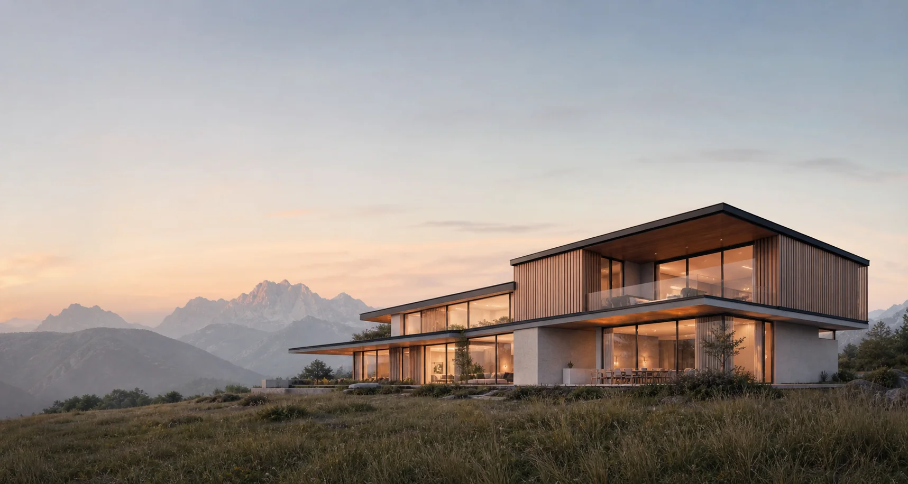
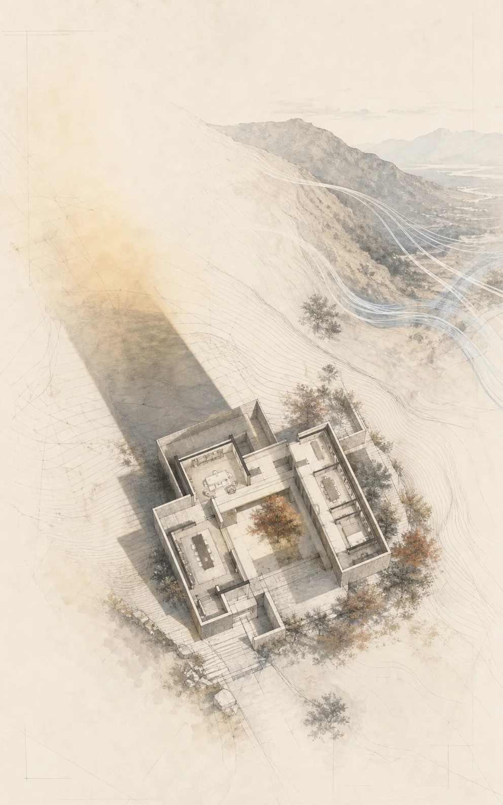
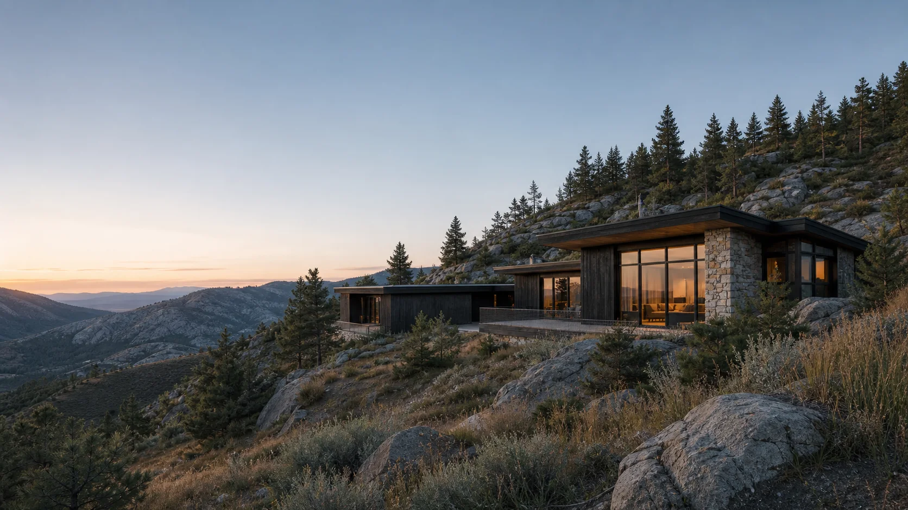
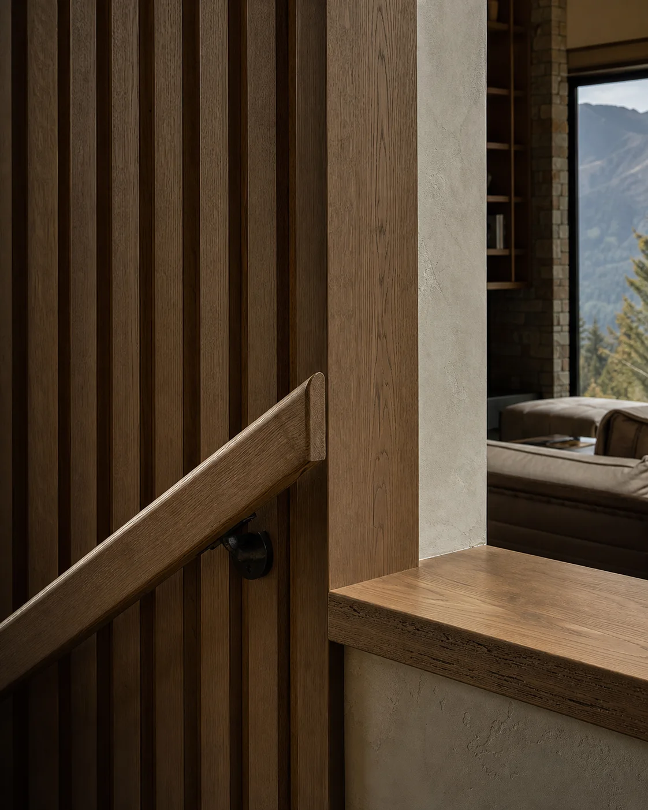
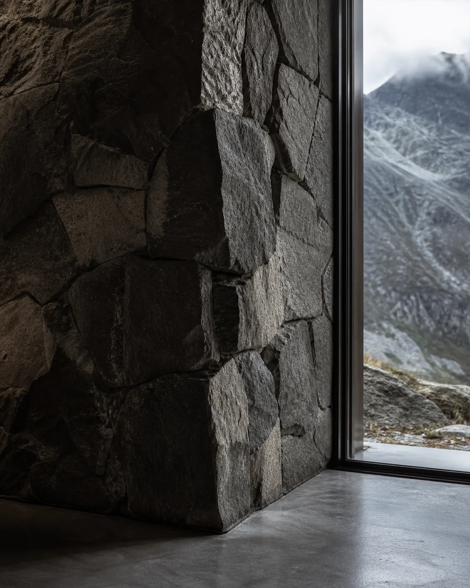
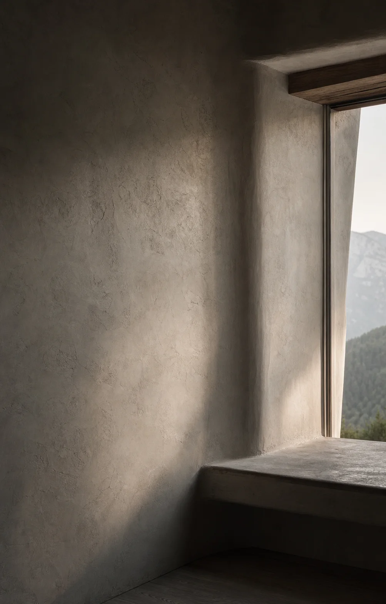
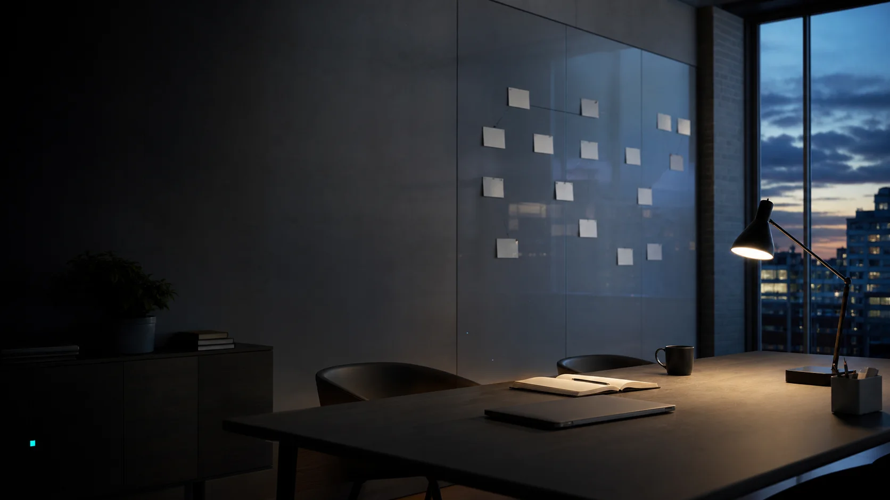

Private residence · Alpine valley
A home drawn
from the land.
The commission
Not an object placed in nature. A sequence shaped by light, wind, and the rituals of home.
1,240 m² siteSouth-east lightCompleted 2026
Reading the site
Before a plan,
there is a place.
Morning light enters from the ridge. Valley wind cools the courtyard. The house turns slowly toward both.
Morning light
Valley wind
Ridge view

A lived sequence
01
Arrive under shelter.
A low timber canopy compresses the threshold before the valley opens beyond.

Material logic
Three surfaces.
One atmosphere.
Each material answers a physical job, then carries that truth into the feeling of the rooms.



